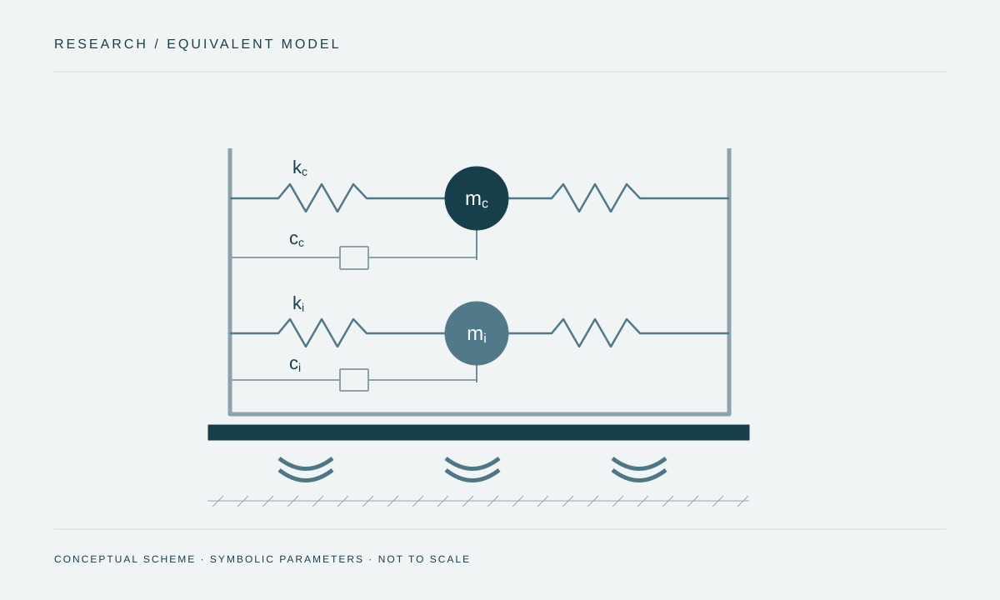

Comparación numérica de tanques de concreto con base fija y aislamiento de triple péndulo.

Procedencia de la figura
- Fuente
- Esquema original del portafolio basado en conceptos generales de modelación; no copia una figura publicada.
- Herramienta
- SVG
- Fecha
- 2026-10-08
- Descripción
- Esquema original de masas impulsiva y convectiva conectadas a un tanque idealizado sobre aislamiento.
- Condición de uso
- Ilustración conceptual, sin resultados calculados ni valores del modelo publicado.
Metodología
Modelos mecánicos equivalentes y análisis dinámico no lineal con siete pares de registros bidireccionales. Se comparan cortante, momento volcante, oleaje y desplazamiento de base.
Parámetros investigados
| Sistema | Variables |
|---|---|
| Tanque–agua | H/R; t/R; radio constante de 10 m |
| Aislamiento | Periodo efectivo de 3 y 4 s; amortiguamiento de 10 % y 25 % |
| Demanda | SLE, DBE y MCE |
Conclusiones y límites
Los casos estudiados muestran menores cortantes y momentos, desplazamientos de base y poca variación del oleaje entre modelos.
Referencia y modalidad
El artículo ocupa las páginas impresas 62–66 de las memorias. La primera corresponde a la página 61 del archivo PDF enlazado.
La coautoría y el contenido del artículo se verificaron en las memorias del CIP. La modalidad de póster procede del CV; no se presenta como una modalidad acreditada por el artículo.